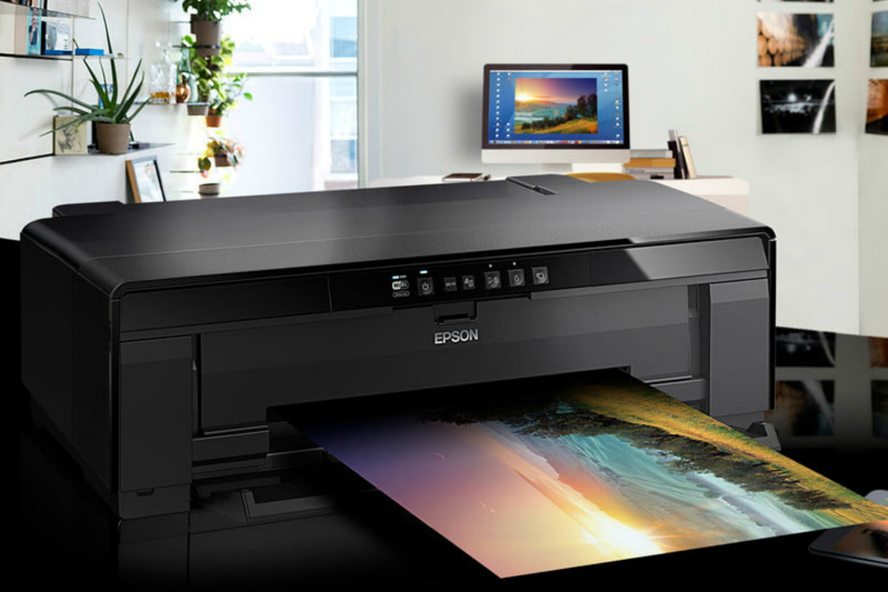
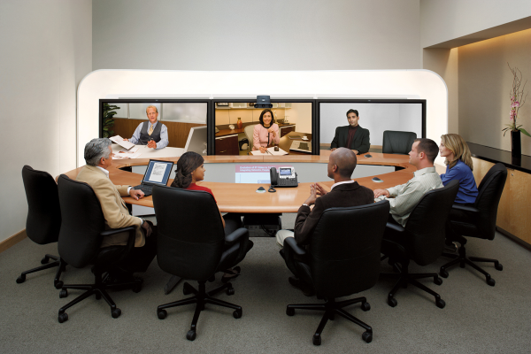

Arsitektur Jaringan Komputer
Hey, I'm Fadly Agus
Mulianta (607012330110)
I'm From a Class D3SI 47-04
"Fadly" itulah nama panggilan saya, dan nama lengkapnya "Fadly Agus Mulianta". Saya lahir di Kabanjahe (Sumatera Utara) pada tanggal 31 Agustus 2004. Anak pertama dari 2 bersaudara yang tinggal di alamat Jalan Samura, Kabanjahe. Beragama Islam. Dan dari suku Batak Karo. Mendengarkan musik adalah kegiatan yang menyenangkan untuk saya dan sudah lama menjadi hobi saya. Saya bukan "Atlet" tapi saya punya hobi bermain Badminton dan Futsal. Saya juga punya kegemaran dalam bidang game, ada beberapa game yang saya mainkan sampai sekarang. Saya ingin bekerja di lingkungan perusahaan-perusahaan besar atau di kementerian BUMN. Oleh sebab itu saya memilih program studi Sistem Informasi agar dapat mencapai tujuan saya bekerja di tempat yang saya inginkan.
JARINGAN AKHIR (END DIVICE)

Komputer
PENGERTIAN
Komputer adalah perangkat elektronik yang memiliki kemampuan untuk mengolah data sesuai dengan program.
FUNGSI
Input adalah penerimaan data atau informasi dari sumber luar, pemrosesan adalah melakukan pemrosesan data, output adalah melakukan fungsi output setelah informasi diproses, penyimpanan adalah tempat penyimpanan informasi, dan pengolahan grafis dan multimedia, pemodelan dan simulasi.
JENIS
Komputer Portable, Komputer Desktop, Komputer Palmtop, Komputer Tower, Komputer Notebook, Handbook (Subnotebook),dan Komputer
Laptop
SUMBER : https://accurate.id/teknologi/pengertian-komputer/

Jaringan Printer
PENGERTIAN
Sebuah jaringan printer memungkinkan beberapa komputer yang terhubung ke jaringan lokal (LAN) untuk menggunakan printer bersama-sama. Dengan kata lain, printer yang terhubung ke jaringan dapat digunakan oleh semua komputer yang terhubung ke jaringan tersebut. Printer dapat terhubung ke komputer dengan berbagai cara, seperti jaringan, kabel USB, atau bahkan nirkabel,seperti Wi-Fi atau Bluetooth.
FUNGSI
Printer berfungsi untuk mengkonversi data digital menjadi cetakan fisik. Data digital dapat berupa teks, gambar, grafik, atau kombinasi.
JENIS
Printer Laser Jet, Printer Dot Matrix, Printer Ink Jet, Printer Label, Printer Thermal, dan Printer 3D.
SUMBER: https://www.pressburner.com/printer-share/
Telepon VoIP
PENGERTIAN
Voice over Internet Protocol (VoIP) adalah teknologi yang memungkinkan Anda melakukan panggilan telepon melalui media internet. Suara yang diterima diubah menjadi kode digital dan diteruskan melalui jaringan yang mengirimkan paket-paket data, bukan lagi melalui sirkuit analog seperti telepon biasa.
FUNGSI
melakukan panggilan suara melalui jaringan internet, suara diubah menjadi kode digital dan dikirimkan dalam bentuk paket data melalui internet.
JENIS
ATA (Analog Telephone Adapter), IP Phones,Softphone
SUMBER: https://qontak.com/blog/voip-adalah/

TelePresence endpoint
PENGERTIAN
Telepresensi adalah seperangkat teknologi yang memungkinkan seseorang seolah-olah hadir, ada, atau berpengaruh pada lokasi yang berbeda. Para pengguna diberikan kemampuan untuk memengaruhi suatu tempat. Dalam hal ini, posisi, gerakan, tindakan, dan suara pengguna bisa dirasakan, ditransmisikan, dan diduplikasi dalam satu tempat untuk memberikan pengaruh yang signifikan
FUNGSI
Fungsi telepresensi adalah memungkinkan partisipasi tatap muka dalam situasi jarak jauh. Teknologi ini memungkinkan seseorang untuk hadir, berinteraksi, dan memengaruhi suatu lokasi tanpa harus berada di sana secara fisik.
JENIS
Telekonferensi Video, Robot Telepresensi, Telepresensi Medis,Telepresensi Pendidikan, dan Telepresensi Industri
SUMBER: https://id.wikipedia.org/wiki/Telepresensi

Perangkat bergerak
PENGERTIAN
Perangkat bergerak adalah sebuah peralatan komputer seukuran kantong. Peranti ini memiliki layar tampilan dengan masukan sentuhan atau papan ketik mini. Telepon cerdas (smartphone) dan PDA (pembantu digital pribadi) sangat populer di antara orang-orang yang membutuhkan bantuan dan kenyamanan komputer konvensional. .
FUNGSI
Perangkat bergerak memungkinkan pengguna untuk berkomunikasi melalui panggilan suara, pesan teks, dan aplikasi pesan secara instan serta perangkat bergerak dapat digunakan untuk memutar musik, menonton video, bermain game, dan membaca buku elektronik..
JENIS
komputer bergerak, konsol permainan genggam, perekam media, pemutar media, dan peralatan komunikasi
SUMBER: https://id.wikipedia.org/wiki/Peranti_bergerak